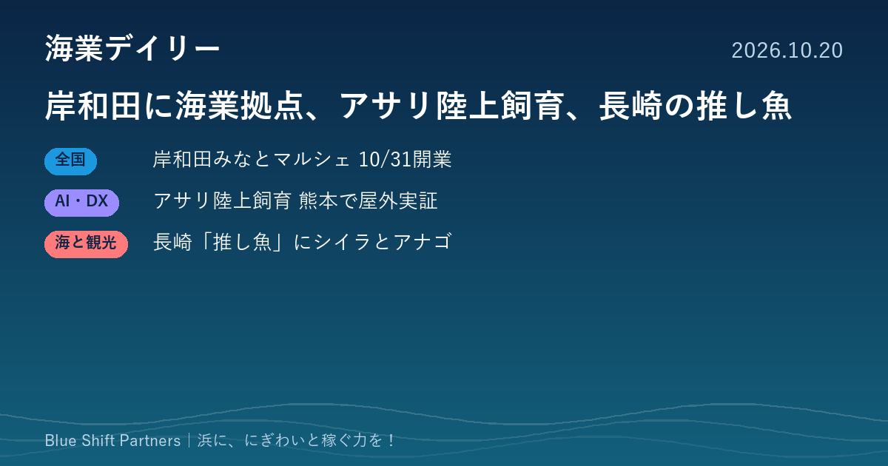

2026.10.20
岸和田に海業拠点、アサリ陸上飼育、長崎の推し魚

大阪・岸和田で漁協が整備した海業の拠点「みなとマルシェ」が10月31日にオープンします。熊本ではアサリを陸上で育てる実証が屋外で始まり、長崎県は地域の飲食店で味わえる「推し魚」を新たに2種選びました。
岸和田の「みなとマルシェ」が10月31日オープン 漁協整備の海業拠点に14店舗
大阪府は10月13日、大阪府鰮巾着網漁業協同組合が整備した「岸和田場外魚市場みなとマルシェ」（岸和田市地蔵浜町）が10月31日にオープンすると発表しました。鮮魚や水産加工品の販売、飲食、海鮮バーベキューなど計14店舗が入ります。当日は岸和田市と地元3漁協でつくる実行委員会が、稚魚放流や食育イベント、マグロ解体ショーなどのオープニングイベントを開きます。11月14・15日に大阪府で初めて開かれる第45回全国豊かな海づくり大会を契機に整備されたものです。
ここがポイント：漁協が主体となって販売・飲食・体験を一か所にまとめた例です。大きな大会や催しを整備のきっかけにし、市と複数の漁協が実行委員会で開業を盛り上げる進め方は、他の浜でも参考になります。
出典：大阪府 報道発表資料「岸和田場外魚市場みなとマルシェがオープンします」（2026-10-13）
大林組、熊本・長洲町でアサリ陸上飼育の屋外実証を開始 餌料費を約10分の1に
大林組は10月14日、熊本県長洲町でアサリの陸上飼育の実証試験を始めたと発表しました。餌となるケイ藻の培養水槽とアサリの飼育水槽を組み合わせた屋外の大型設備で、給餌の量やタイミング、水質管理などの最適な条件を検証します。ケイ藻の栄養材に味の素九州事業所のアミノ酸製造で出る副生液を使い、米ぬかなどの代替餌料も組み合わせて、餌料費をケイ藻だけの場合の約10分の1に抑える見込みです。長洲町、熊本北部漁協、西日本工業大学、味の素九州事業所との連携協定（2025年締結）の一環です。
ここがポイント：陸上での飼育は管理しやすい一方、餌のコストが課題でした。連携企業の副産物を活用してコストを下げる発想は、漁協・自治体・企業が組んで資源回復に取り組むモデルとして注目できます。
出典：株式会社大林組 ニュースリリース「アサリ陸上飼育の実証試験を熊本県長洲町で開始」（2026-10-14）
長崎県「推し魚」に平戸のシイラと対馬のアナゴ 地域で安定提供する産地の魚
長崎県は、地域の飲食店やホテルで安定して味わえる仕組みが整った「産地イチ推しの魚」を選ぶ「推し魚」に、第3号として平戸市のシイラ、第4号として対馬市のアナゴを選んだと発表しました。両魚種とも水揚げ量が多く、鮮度や品質の評価が高いことなどが理由です。平戸のシイラのお披露目会と連携協定の締結式は10月20日、対馬のアナゴは11月5日に予定されています。これまでに新上五島町の養殖クロマグロと松浦市のマアジが選ばれています。
ここがポイント：魚を選ぶだけでなく、地域の飲食店で「いつ来ても食べられる」提供体制を条件にしている点がポイントです。産地の魚を目当てに人を呼ぶ漁村観光の仕掛けとして参考になります。
出典：長崎県 プレスリリース（共同通信PRワイヤー配信）「長崎県『推し魚』プロジェクト第3・4弾」（2026-10-06）
今日の3件に共通するのは、漁協・自治体・企業が「組んで」動いていることです。岸和田は大会を契機に市と漁協が、熊本は企業の副産物を活かして漁協と大学が、長崎は産地と飲食店が手を組んでいます。自分の浜で組める相手は誰か、一度書き出してみると次の一手が見えてきます。